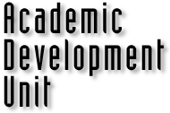

| community |
| home page |
|  |
| A number of our center reports, papers, and programs can be found on our anonymous ftp site, which is coastal. . Members of the center are coastal engineers, coastal geologists and oceanographers, primarily from the University of Delaware and the Middle-Atlantic region. Through the Department of Civil and Environmental Engineering, graduate students working in the center can earn a Masters or a Ph. A number of our center reports, papers, and programs can be found on our anonymous ftp site, which is coastal. |
|
I have a long-standing interest in helping students develop the skills they need to be successful in science and so I have constructed this web site as a first source of information on the development of these important life skills. If you have any suggestions for improvement let me know that too. au General good advice Advice to postgraduate students by Scott Keogh Advice to postgraduate students from the University of Canberra Graduate student advice from the University of Washington Cynical advice for graduate students by Stephen C. in the UK Re-envisioning the PhD - and VERY good source of info, it's a similar (and bigger) site to this one Getting some extra motivation The Dead Thesis Society - a good place to get that extra motivation you might need. PhinisheD - a discussion and support group for people having trouble finishing their thesis. |